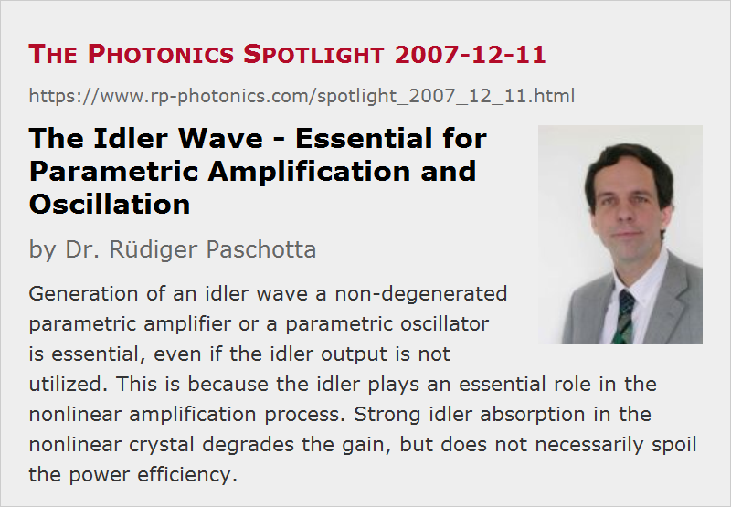

The Idler Wave - Essential for Parametric Amplification and Oscillation
Posted on 2007-12-11 as a part of the Photonics Spotlight (available as e-mail newsletter!)
Permanent link: https://www.rp-photonics.com/spotlight_2007_12_11.html
Author: Dr. Rüdiger Paschotta, RP Photonics Consulting GmbH
Abstract: Generation of an idler wave a non-degenerated parametric amplifier or a parametric oscillator is essential, even if the idler output is not utilized. This is because the idler plays an essential role in the nonlinear amplification process. Strong idler absorption in the nonlinear crystal degrades the gain, but does not necessarily spoil the power efficiency.

Ref.: encyclopedia articles on parametric amplification, optical parametric amplifiers and optical parametric oscillators; M. A. Watson et al., “Extended operation of synchronously pumped optical parametric oscillators to longer idler wavelengths”, Opt. Lett. 27 (23), 2106 (2002)
It is common that a non-degenerate optical parametric amplifier (OPA) produces a so-called idler output which is not utilized. In such a situation, one may think that the generation of that idler is not essential – that it would not matter e.g. if the idler wave would be strongly absorbed in the nonlinear crystal.
That belief, however, would be entirely wrong. The idler wave plays an essential role in the process of parametric amplification. It is quite instructive to look at the equations determining the evolution of the amplitudes of signal, idler and pump along the crystal:
where A3 is the amplitude of the pump A2 that of the signal, and A1 that of the idler. Some further details are given in the article on parametric amplification.
Imagine an OPA with some pump and signal inputs, but no idler input. In the first bit of the nonlinear crystal, there is hardly any idler amplitude, and therefore hardly any signal amplification: the growth of the signal amplitude is proportional to the generated idler amplitude. That growth will subsequently become larger, as the idler is generated via difference frequency generation from pump and signal. If, however, the idler wave is strongly absorbed in the crystal, the idler amplitude cannot be built up, and the parametric gain remains small.
Interestingly, although idler absorption has a strong impact on the achievable gain, it does not degrade the power efficiency in terms of signal output power divided by used pump power. It may just be that most of the pump power stays unconverted – the pump depletion remains small. But this is a matter of device design: strong pump depletion is still possible, and the efficiency is then not too bad.
The paper by Watson et al. as cited above presents an optical parametric oscillator which can be tuned into a spectral region where the idler is in the strongly absorbing region of the used LiNbO3 crystal. While the performance is significantly degraded, compared with devices operating in regions without significant idler absorption, it may still be sufficient for some applications where the mid-infrared idler is required.
This article is a posting of the Photonics Spotlight, authored by Dr. Rüdiger Paschotta. You may link to this page and cite it, because its location is permanent. See also the RP Photonics Encyclopedia.
Note that you can also receive the articles in the form of a newsletter or with an RSS feed.
Questions and Comments from Users
Here you can submit questions and comments. As far as they get accepted by the author, they will appear above this paragraph together with the author’s answer. The author will decide on acceptance based on certain criteria. Essentially, the issue must be of sufficiently broad interest.
Please do not enter personal data here; we would otherwise delete it soon. (See also our privacy declaration.) If you wish to receive personal feedback or consultancy from the author, please contact him e.g. via e-mail.
By submitting the information, you give your consent to the potential publication of your inputs on our website according to our rules. (If you later retract your consent, we will delete those inputs.) As your inputs are first reviewed by the author, they may be published with some delay.
|  |
If you like this page, please share the link with your friends and colleagues, e.g. via social media:
These sharing buttons are implemented in a privacy-friendly way!